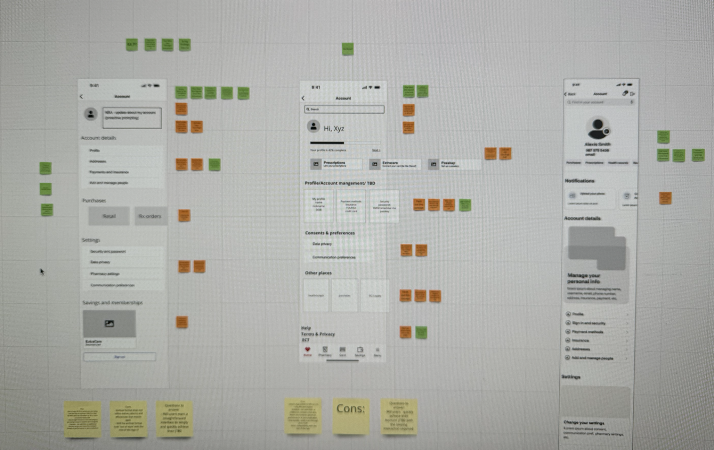

The original account screen, dense navigation and friction heavy flows.
Authentication is the front door to everything in the CVS app, prescriptions, pharmacy, account. I redesigned login, biometric, and security flows for iOS and Android to remove friction without compromising safety.
Rather than show static mockups, I recreated the account flow as working UI to show the small interactions that make it feel effortless. iOS push and pop transitions, an animated Face ID toggle, and a save to success morph. Tap through it below, or open it full screen.
As a designer on the CVS Health Accounts team, I owned the experiences that get people into the app safely, with sign in, biometric setup, secure login, and account management across iOS and Android. These flows touch nearly every customer, every session, which means even small amounts of friction multiply into millions of frustrated moments.
Login was a known pain point. Customers ran into friction during sign in and password recovery, biometric options weren't consistent across platforms, and navigating account settings was harder than it needed to be. Every safeguard we added risked adding a step, and every step we removed risked weakening trust. The work was to resolve that tension, not pick a side.
Worked across teams with research to understand where users got stuck, mapping the login and account journeys and the moments that caused drop off and support contacts.
Explored streamlined sign in patterns, biometric (Face ID / fingerprint) setup, and clearer account navigation, balancing security requirements against the fewest possible steps.
Built interactive prototypes and ran usability testing to validate that the new flows were both faster and clearer, iterating on what the testing surfaced.
Partnered with engineering to ship pixel accurate, accessible implementations across iOS and Android, with specs that held up to platform differences.
The redesign resolved the security versus simplicity tension with a few deliberate moves. I helped move the account experience off a third party framed web view and onto a native One Account foundation, which gave people a faster, consistent sign in on iOS and Android and cut our reliance on outside vendors. I introduced phone number as username backed by risk based authentication, so returning users get in with far less friction while the app quietly raises the bar only when a sign in looks risky.
Trust also meant designing for everyone. I centralized consent and communication preferences into one clear surface and led the accessibility work that resolved the issues flagged in an App Store review, aligning the flows to WCAG and validating them in testing. Biometric setup, sign in, and recovery were streamlined into fewer, clearer steps across both platforms.

“A standout contribution was his leadership in designing a communication preferences experience for iOS and Android, partnering closely with Product, Design, and Engineering teams to balance business goals with user needs, all under an aggressive launch timeline.”
Designing the front door for millions taught me that security and simplicity aren't opposites, they're a design problem. The best authentication is the kind users barely notice. Working at this scale also sharpened how I collaborate, with research to find the real pain, and with engineering to make sure the polished prototype survives contact with two very different platforms.
The account experience serves millions. What you are watching on the right began with one family, mine, a native app for managing a loved one’s prescriptions, running live and walking its own flow.